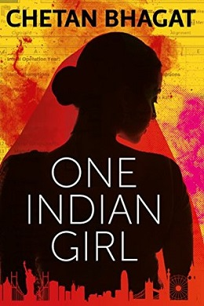

My name is Aswanth Reddy, Previously I worked on a project called Infosys Limited..
The book begins with Radhika making arrangements regarding her marriage with Brijesh Gulati who works as a software engineer for Facebook in San Francisco. She later revealed her childhood and life in Delhi, as a studious, shy and nerdy girl who came from a middle-class family. Radhika has an elder sister, Aditi who was the more beautiful, outgoing, and popular one at their school. She also communicated her thoughts and decisions to her inner judgemental voice or "mini-me" as called.
